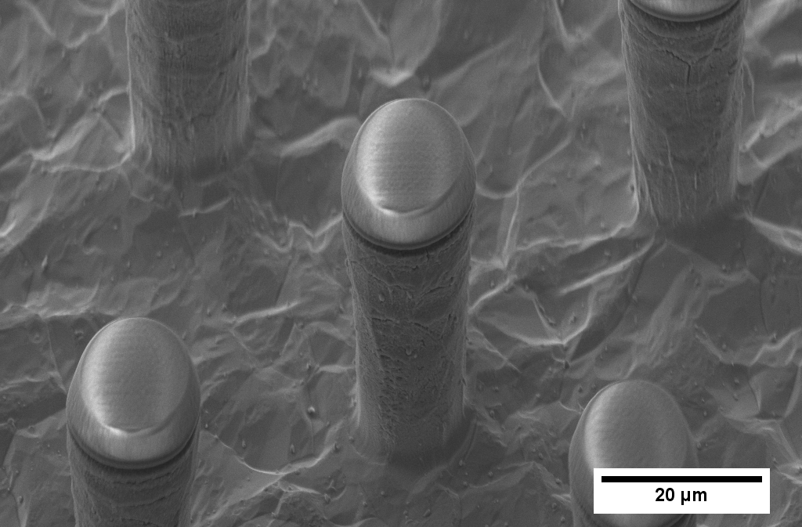

Titanium is the material of choice for many implants, and will be used as a frame to hold the Window to the Brain transparent YSZ implant and anchor it to the skull. Titanium is is also used for creating microneedle devices for optical clearing agent injection.
Titanium foil is bonded to the ceramic WttB implant through diffusion bonding. Diffusion bonding is accomplished with the use of the CAPAD (current-activated pressure-assisted densification) machine created by Dr. Javier Garay, PhD at UC Riverside. The titanium frames will allow for the WttB to be easily anchored to the skull using common dentistry practices (e.g. titanium screws). The implants are expected to cause very little inflammation because they do not apply a constant load to the body. The titanium-YSZ bonds are assessed via pressure burst tests to confirm adequate strength.
Titanium microneedle devices are fabricated by applying the MEMS methods. The titanium microneedle devices are used to inject an optical clearing agent into the scalp. This makes the scalp temporarily transparent so light-based imaging and therapeutics can be performed through the Window to the Brain non-invasively without having to displace the scalp.